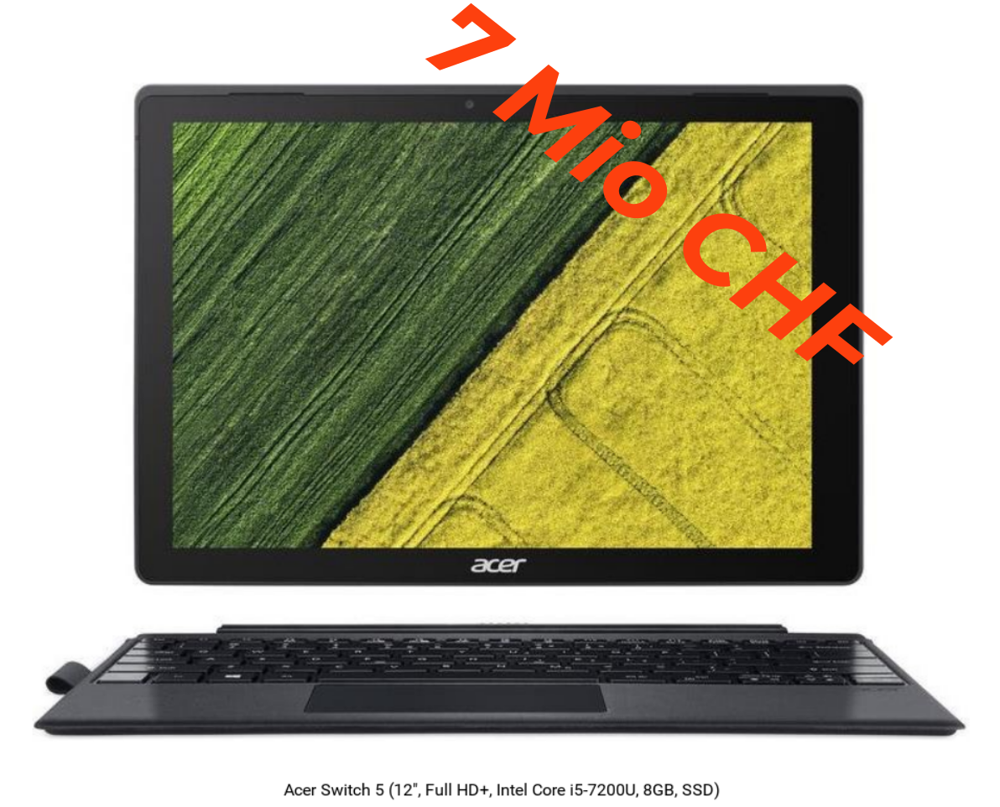
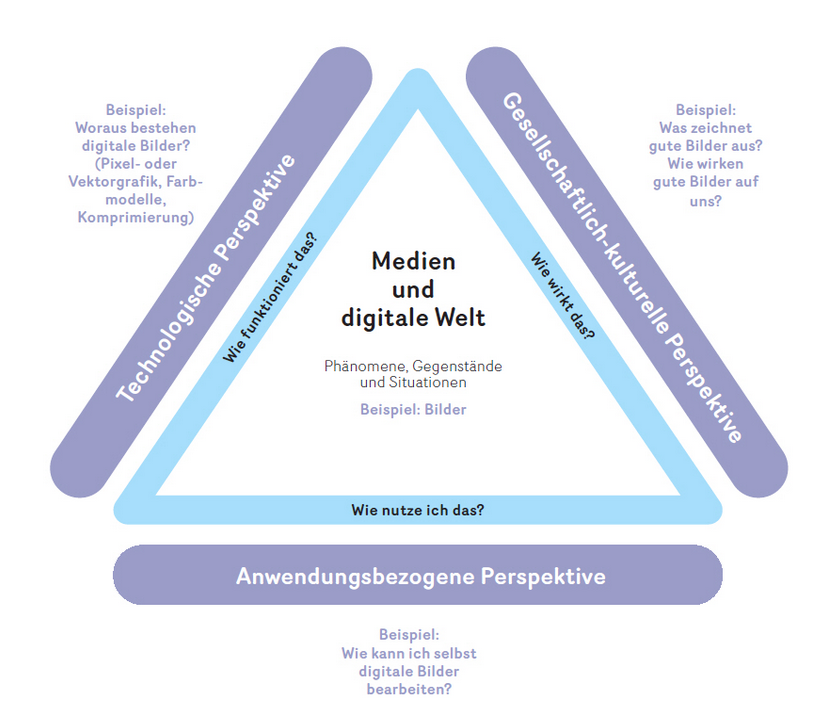

Guerillapädagogik in der Informationstechnik:
Wie Primarschülerinnen dein Passwort cracken
Winterkongress der Digitalen Gesellschaft 2019-02-23
Harald von Waldow <blackbelly@computerdetektive.ch>
Ranjan Benz


Worum geht es?
C O M P U T E R D E T E K T I V E- Ein IT Kurs für Primaschülerinnen
- Klassenstufen 4 - 6 (9 - 12 Jahre)
- 12 Termine à 1h 45m im GZ Zürich-Seebach
- September - Dezember 2018
Motivation

- "Digitale Bildung" ist in aller Munde
- Lehrplan 21: "Medien und Informatik"
- Ab diesem Schuljahr, ab Klasse 5
Motivation

Quelle: Lehrmittelverlag Zürich
Quelle: Lehrmittelverlag Zürich
Quelle: Lehrmittelverlag Zürich
- Beispiel Bilder
- Wichtige Grundlage?
- Kunst & Zeichenunterricht?
- Macht 20% des Lehrbuchs aus!
Motivation
Elternperspektive
- Tragfähige technische Grundlagen
- Souveräner Umgang mit dem Computer
- "Ich passe die Maschine meinen Bedürfnissen an, nicht umgekehrt."
- Sicherheit, Datenschutz, Privatsphäre
- Schutz vor Angriffen, "bösen Männern", Betrug, Datenklau
Motivation
Gesellschaftliche Perspektive
- Digitalisierung durchdringt alle gesellschaftlichen Bereiche.
- Wir sind überfordert.
- Beispiele aus der Tagespolitik:
- Überwachungs- und Manipulationsskandale
(FB, Google, Microsoft, ...) - "Netzsperren" (Geldspielgesetz)
- E-Voting Debatte
- Debatten und Reaktionen sind durch technische Ignoranz geprägt. => Es besteht massiver Bildungsbedarf
"Machs doch besser, wenn dich so viel stört!"
"Machs doch besser, wenn dich so viel stört!"
"Versuche etwas anderes, das hoffentlich Sinn macht"
Motivation
Vorhaben
- Technische Grundlagen mit langer Halbwertszeit vermitteln.
- Direkt anwendbares technisches Know-How vermitteln; Spass und Nutzen.
- Ein paar essentielle digitale Überlebensregeln vermitteln.
- Begeisterung und Selbstvertrauen wecken!
- Ich kann die Maschine beherrschen und verstehen; sie gehorcht mir.
- Meiner Kreativität sind praktisch keine Grenzen gesetzt.
- Ein Computer ist viel mehr, als ein Gerät mit vielen Knöpfen.
Setup
- Laptops: 10 (geliehen von Labdoo.org) + 3
- 5 Schul-Tablets
- 16 Memory-Sticks (booten angepasstes Ubuntu 18.04 / Gnome 3
- Mäuse, Apdapter, lose Komponenten
- 2 Desktop PCs
Setup
- 12 Teilnehmer/innen:
5 Maidli, 7 Buebe, 9 x 5. Klasse, 1 x 3. Klasse 1 x 6.Klasse - Computerraum im GZ-Seebach
So it begins
- Detektivstory => kaputter Computer
- Gehäuse, Mainboard, CPU, Lüfter, RAM, Festplatte
- Was ist das?
- Wozu dients das?
- Anfassen, einbauen
Schnitzeljagt
- Ein 2. Rechner muss gefunden werden!
- Koordinaten?
=> openstreetmap.org, maps.google.com, swisstopo - Oh, kein WLAN - Passwort!
Was tun Erwachsene oft mit Passwörter? - SSID / Hotspot / Signalstärke
Filesystem
- Finde eine Datei mit einem bestimmtem Namen.
- Finde Datei mit bestimmtem Inhalt!
- Und zwar in einem Verzeichnisbaum mit
- 64 directories,
- 168 files,
- mit insgesamt 144 MB interessantem Inhalt
Filesystem
- Kennenlernen von Filetypen und ihren Endungen
- Typische File-Grössen
- Welche Anwendungen starten, wenn man draufklickt?
- Struktur eines Verzeichnisbaums
- Filetransfer
rsync -rv darlene@192.168.1.9:secret_sauce . - Finde Datei mit bestimmtem Namen
find . -name "L1D1ueber.ods" - Finde Datei mit bestimmtem Inhalt!
grep -Hr "G.A.S.P." .
GUI:
CLI:
Cliffhanger
Code: ROT13
-------------------------------------------------------------------------------
Qh unfg nyfb nhpu qvr mjrvgr Anpuevpug trshaqra haq ragfpuyüffryg. Thg trznpug!
Qra aäpufgra jvpugvtra Nhsgent reuäyfg qh nhs qvrfre Jrofrvgr:
fpvraprqngn.pu/tnfc_abgsnyycebgbxbyy.ugzy
-------------------------------------------------------------------------------
----------> end of transmision -- G.A.S.P./4711-12 <----------------------------
Browser Basics
- Bookmarks (Lesezeichen)
- Tabs
- History (Chronik) Welche Seiten habe ich denn beim Einrichten der Sticks besucht?
- History löschen
- Private mode
- Plugins
- uBlock origin
- Toggle-JS
- HTTPS Everywhere
- Cookiemanager
Browser Basics
D E M O
Webseiten

- Wir können das Web ändern!
- Nicht ganz wirklich, aber ...
Web-Suche
Suchmaschinen
Es gibt gute Gründe, Google zu vermeiden. Benutze
Such-Operatoren
Startpage-Metasuche:url:"supported-by-startpage" site:startpage.comhttps://www.google.com/search?q=title:"index of"+mp3+eminemKann laut werden!
Zurück zum Fall
Code: ROT13
-------------------------------------------------------------------------------
Qh unfg nyfb nhpu qvr mjrvgr Anpuevpug trshaqra haq ragfpuyüffryg. Thg
trznpug!
Qra aäpufgra jvpugvtra Nhsgent reuäyfg qh nhs qvrfre Jrofrvgr:
fpvraprqngn.pu/tnfc_abgsnyycebgbxbyy.ugzy
-------------------------------------------------------------------------------
----------> end of transmision -- G.A.S.P./4711-12 <----------------------------
- Suche im Netz: Was ist das?
- Wie kann ich das entschlüsseln?
Du hast also auch die zweite Nachricht gefunden und entschlüsselt. Gut gemacht!
Den nächsten wichtigen Auftrag erhälst du auf dieser Webseite:
https://sciencedata.ch/gasp_notfallprotokoll.html
Exkurs
WHOIS
harald@w1:~/private/digiges2019$ whois sciencedata.ch
This information is subject to an Acceptable Use Policy.
See https://www.nic.ch/terms/aup/
Domain name:
sciencedata.ch
Holder of domain name:
Harald Von Waldow
[redacted]
[redacted]
Switzerland
Technical contact:
Harald Von Waldow
[redacted]
[redacted]
Switzerland
Registrar:
NOVATREND Services GmbH
First registration date:
2017-11-17
DNSSEC:N
Name servers:
ns116.tophost.ch [194.150.248.56]
ns117.tophost.ch [194.150.248.56]
CTF
junior Capture The Flag
- Eigentlich ein Trainingsformat für Computersicherheitsfachleute
- Abgewandelt, um Kinder spannend und "realistisch" mit UNIX und bash vertraut zu machen.
- Merci beaucoup à Axelle Apvrille ( @cryptax) , die das erfunden und viele Challanges geschrieben hat!
- CTFd: CTF - Framework, das Teams, Aufgaben, Punkte, etc. verwaltet.
- juniorctf: Aufgaben (und Stories) und ein Docker-Container pro Challenge.
- Aufgaben werden auf via Terminal auf einem entfernten Computer
(= Docker-Container) gelöst.
Tor
Anony Surfen
Alexander Lehmann- Eigene IP-Adresse & Geoinfo via browserleaks.com/ip
- Vergleich mit scheinbarer Ursprungs-IP mit Tor-Browser.
- => Die ganze Welt und die Schweiz mitten drin.
- Was passiert mit euren Suchergebnissen?
MITM-Angriff
Das Schulnetz beschützt dich
- IE auf Schul-Tablet akzeptiert gefälsche SSL-Zertifikate.
- Firefox bringt eigene root-CAs mit. => Bemerkt MITM-Angriff.
- Warum? Was kann ich tun, um mich selbst vor unerwünschten Inhalten zu schützen?
Finale
Eine Mail aus dem hauptquartier
sciencedata.ch/geoblockedFinale
Einige Take-aways
- Scratch wird möglicherweise überschätzt - nächstes Mal versuchen wir Turte als Programmiersprache.
- Es gib Primarschülerinnen, die können und wollen die Kommandozeile benutzen!
- Online(Web)-Spiele sind die Pest. Nächstes mal vielleicht einen Pi-Hole vorschalten?
- juniorCTF ist eine absolute Geheimwaffe, die für nächstes Mal massiv ausgebaut wird.